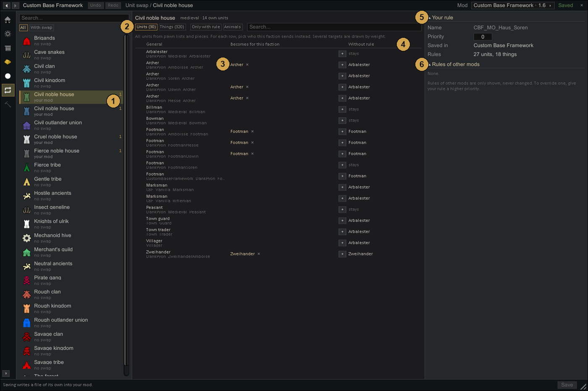
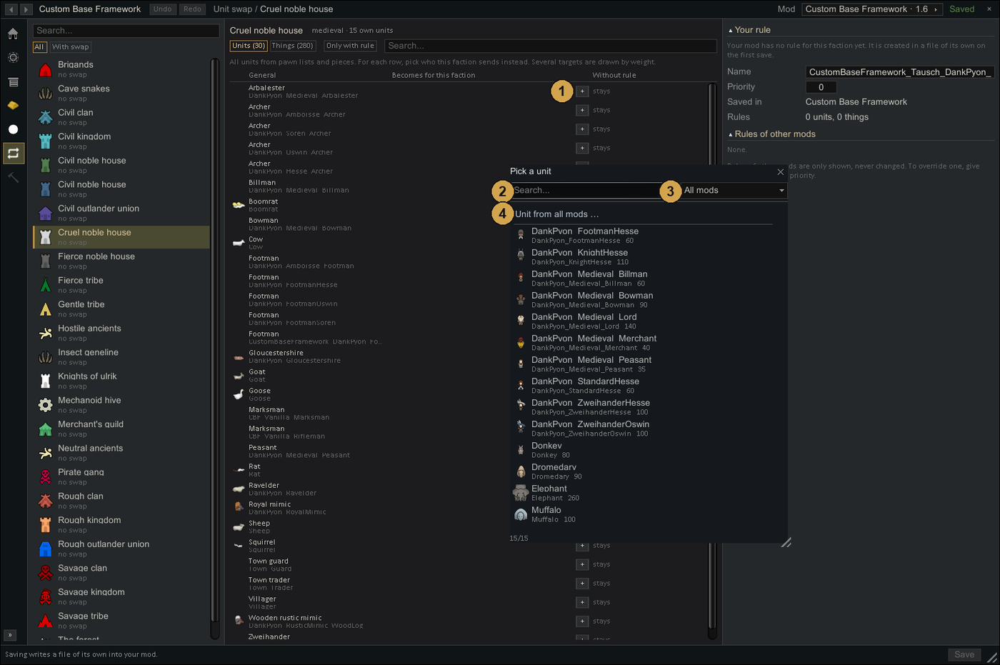

Unit swap
Pawn lists and pieces name general units and things: an archer, a footman, a banner. Unit swap decides what each faction uses instead, so a noble house sends its own knights and hangs its own banners, without a copy of every list and piece per faction.

- Factions on the left. Below each name: which mods have swap rules for it. With swap shows only those.
- Units or Things: every unit from pawn lists and pieces, every thing from pieces and object lists. Animals also shows animals from pens and vermin.
- Becomes for this faction: the targets. + adds a target from the faction's own units, several targets are drawn by weight. For things, ... picks one target of the same kind.
- Without rule: what the faction would get without a rule. The fallback takes the faction's own unit with the same way of fighting and the closest combat power. Things stay as they are.
- Your rule: name, Priority and the mod it is saved in.
- Rules of other mods: shown, never changed.

- + opens the picker with the faction's own units, with combat power.
- Search in names.
- Mod filter.
- Unit from all mods when the faction has nothing fitting.
Priority
Several mods can bring rules for the same faction. Per unit or thing, the rule with the highest priority applies. To override a rule of another mod, give yours a higher priority.
Saving writes a file of its own into your mod, under Defs/CustomBaseFramework/Einheitentausch. Files of other mods are never touched.